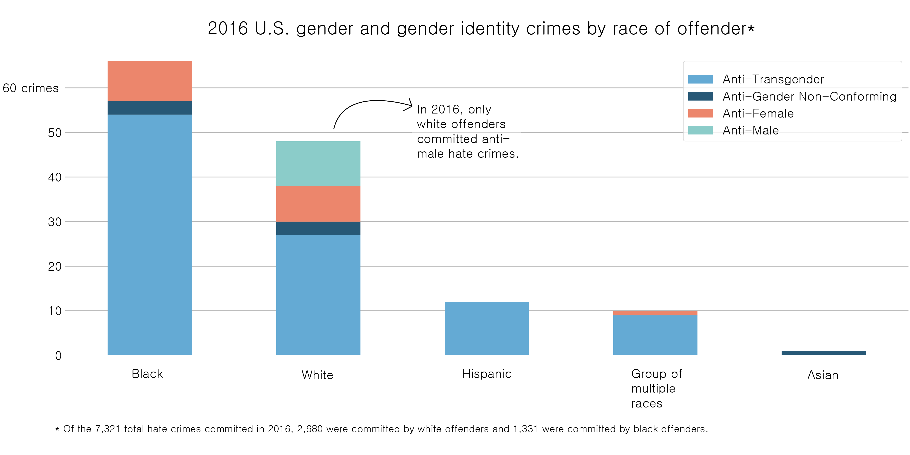

BY Veronica Penney
Published July 27, 2018
The most recent FBI hate crime statistics, from 2016, show that hate crimes increased from 5,850 incidents in 2015 to 6,128 incidents in 2016. 2016 saw 179 more hate crimes motivated by ethnicity, 29 more motivated by religion, 23 more motivated by sexual orientation, 4 fewer motivated by disability, 8 more motivated by gender, and 10 more motivated by gender identity than in 2015.
Source: FBI 2016 Hate Crime Statistics
Over one third of all hate crimes were committed by white offenders and white offenders commit almost twice as many hate crimes as black offenders.
A look at less common hate crimes
Hate crimes motivated by race or religion may comprise the majority of all hate crimes committed in the United States, but hate crimes motivated by disability, gender and gender identity recieve less press.
SOURCE: FBI 2016 Hate Crime Statistics
There are far fewer hate crimes each year motivated by disability, gender and gender identity than those motivated by race and religion. Though white offenders commit a far greater number of hate crimes than black offenders, black offenders do commit disability, gender and gender-identity crimes at a higher relative rate than white offenders. This could possibly point to community or cultural factors that affect views on disability and gender.
Just gender
A look at hate crimes against transgender, anti-gender conforming, female, and male victims.
 SOURCE: FBI 2016 Hate Crime StatisticsOnly white offenders commited crimes against men with anti-male sentiment as a primary motivating factor. From the data provided by the FBI, it is impossible to tell whether white women or men were attacking other white women or men, or if these crimes were also partially motivated by religious or ethnic motives.
Hate crime locations
Source: FBI 2016 Hate Crime Statistics
The most common location for hate crimes committed in 2016 was in private homes or residences. Since most hate crimes were assaults or physical attacks, as opposed to robbery or vandalism, perhaps the safety of a private setting allowed conflicts or confrontations to escalate. A look at the remaining locations where hate crimes most frequently occured in 2016 is hardly surprising--most were committed in public places where diverse people are likely to interact, such as sidewalks, roadways, and parking lots.